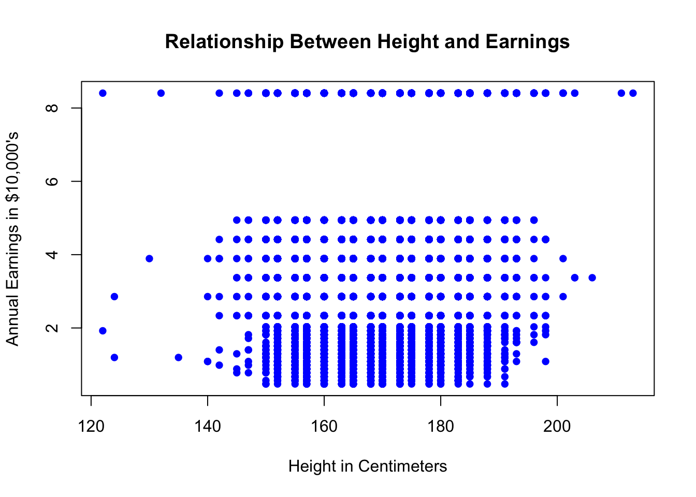
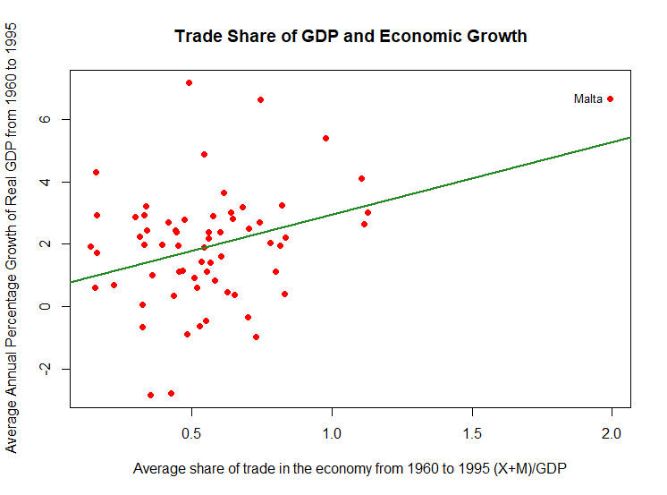
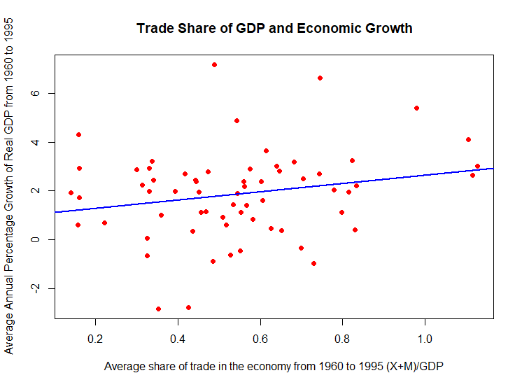

## Set the working directory for the tutorial file
#..........................
# Use the top menu bar option
#..........................
## Load the dataset from a comma separate value
data=read.csv(file="tute4_height.csv")
## Load required package(s)
library(stargazer)Part A
Getting Started
Please create a Tutorial4 folder on your computer, and then go to the LMS site for ECOM20001 and download the following files into the Tutorial4 folder:
tute4.R
tute4_height.csv
tute4_growth.csv
The first file is the R code for tutorial 4, the second two files are the .csv files that contain two separate datasets for the tutorial.
The first (micro) dataset, tute4_height.csv, has the following 6 variables:
| id | worker identifier |
| earnings | annual labour earnings in $10,000’a (in real terms, 2012=100) |
| height | height without shoes in centimetres |
| weight | weight without shoes in centimetres |
| male | binary variable that equals 1 if the worker is male; 0 otherwise |
| age | age of the worker at the time of the survey |
In total, the dataset contains this information for n=17,870 U.S. workers.
The second (macro) dataset, tute4_growth.csv, has the following 4 variables:
| country | country name |
| growth | average annual percentage growth rate of real GDP (1960=100) from 1960-1995 |
| rgdp60 | the value of GDP per capita in 1960 (in real terms, 1960=100) |
| tradeshare | the average share of annual trade in the economy from 1960 to 1995, measured as the sum of gross exports plus gross imports divided by nominal GDP; that is, the average of (X+M)/GDP from 1960 to 1995 |
With the R file and data downloaded into your Tutorial4 folder, you are ready to proceed with the tutorial.
Please go to the tute4.R file to with this tutorial.
The first thing to do is set the Working Directory and then load the CSV file into a dataframe:
Part B
Having worked through the tute2.R code and graphs, please answer the following:
Earnings and Height
Q1
Discuss the summary statistics for the variables in the sample. What does a typical worker look like?
Solution
stargazer(data1,
summary.stat = c("n", "mean", "sd", "median", "min", "max"),
type="text", title="Descriptive Statistics")
Descriptive Statistics
=========================================================
Statistic N Mean St. Dev. Median Min Max
---------------------------------------------------------
id 17,870 8,935.500 5,158.769 8,935.5 1 17,870
earnings 17,870 4.688 2.692 3.893 0.473 8.405
height 17,870 170.098 10.097 170 122 213
weight 17,870 77.356 23.323 74 36 227
male 17,870 0.442 0.497 0 0 1
age 17,870 40.920 10.038 40 25 65
---------------------------------------------------------Interpretation
A typical worker earns $46,880 per year, is 170 cm tall, 77 kilograms and is 41 years old.
44.2% of the workers in the sample are male.
Q2
Present the scatter plot q1_scat_height_earnings.pdf and discuss whether there is a relationship visually between height and earnings.
Solution
The scatter plot stored in plot q1_scat_height_earnings.pdf is reproduced below.
plot(data1$height,data1$earnings,
main="Relationship Between Height and Earnings",
xlab="Height in Centimeters",
ylab="Annual Earnings in $10,000's",
col="blue",
pch=16)
The scatter plot does not immediately suggest a positive relationship between earnings and height.
## Sample correlation between height and earnings
## using the cor() function
cor(data1$height,data1$earnings)[1] 0.1044771Q3
Compute the difference in means for workers greater and less than 170cm, conduct a two-sample t-test of the null that the difference in means is 0, and report the 95% CI for the difference in means.
Do the results provide evidence of a relationship between earnings and height?
Solution
Run the following R code chunk
## Mean earnings for heights above and below 170cm
mean(data1$earnings[data1$height>=170])[1] 4.909318mean(data1$earnings[data1$height<170])[1] 4.44879## Difference in means for people taller and shorter than 170cm
mean(data1$earnings[data1$height>=170])-mean(data1$earnings[data1$height<170])[1] 0.460528## 2-sample t-test of difference in means for people taller and shorter than 170cm
t.test(data1$earnings[data1$height>=170],data1$earnings[data1$height<170])
Welch Two Sample t-test
data: data1$earnings[data1$height >= 170] and data1$earnings[data1$height < 170]
t = 11.469, df = 17783, p-value < 2.2e-16
alternative hypothesis: true difference in means is not equal to 0
95 percent confidence interval:
0.3818203 0.5392357
sample estimates:
mean of x mean of y
4.909318 4.448790 The difference in means is $4605/year.
A two-sample t-test rejects the null of equal means with a t-statistic of 11.470 and p-value less than 2.2e-16.
The 95% CI is [$3818,$5392].
The results provide initial evidence that taller people in the top half of the sample above the median height of 170cm have higher average income than people in the bottom half of the sample with height below 170cm.
Q4
Estimate the following single linear regression model for worker \(i\):
\[Earnings_i = \beta_0 + \beta_1 \, Height_i + u_i \] Provide an interpretation of the slope coefficient for a one-unit increase in height, and report the R-Squared and Standard Error of the Regression.
Solution
## Single linear regression of earnings on height
earn_reg1=lm(earnings~height,data=data1)
summary(earn_reg1)
Call:
lm(formula = earnings ~ height, data = data1)
Residuals:
Min 1Q Median 3Q Max
-4.7972 -2.1909 -0.7923 3.4421 5.0579
Coefficients:
Estimate Std. Error t value Pr(>|t|)
(Intercept) -0.051174 0.338050 -0.151 0.88
height 0.027859 0.001984 14.042 <2e-16 ***
---
Signif. codes: 0 '***' 0.001 '**' 0.01 '*' 0.05 '.' 0.1 ' ' 1
Residual standard error: 2.678 on 17868 degrees of freedom
Multiple R-squared: 0.01092, Adjusted R-squared: 0.01086
F-statistic: 197.2 on 1 and 17868 DF, p-value: < 2.2e-16sd(data1$height)[1] 10.09693Reporting The regression results from the R output above we have
\[\begin{align*} \widehat{Earnings} & = \underset{(0.338)}{-0.051}+ \underset{(0.002)}{0.028} \,height \, \underset{\qquad(s.e)}{}\\ & R^2=0.011 \qquad SER=2.678 \end{align*}\]
Increasing height by 1cm has a corresponding increase in annual earnings of $280.
Note the the regression results shown above include standard errors for the regression coefficient estimates as prescribed later in Lecture note 5, for consistency in presentation of results (we do not have to use these\(\dots\)yet).
Q5
Provide an alternative interpretation for the regression results.
For a worker with average height, what is the impact of increasing their height by one standard deviation on earnings?
How does this predicted increase compare to the sample mean of earnings?
Is this a more relevant interpretation of the results than the interpretation given in question 4 above? Why or why not?
Solution
Average height is 170cm and the standard deviation of height 10.10cm. So, increasing height from 170cm to 180.10cm would yield a corresponding increase in earnings of $10,000 x 0.028 x 10.10cm=$2,828/year.
This compares to an average earnings of $46,875/year, implying an annual earnings increase that is 100 / 46875 = 6.03% of the sample average.
Given inflation tends to be in the 2 to 3% range, this implies a near doubling of income growth year-to-year relative to inflation, which could be interpreted as being economically meaningful, simply from being taller!
This is a more meaningful interpretation than one based on a one-unit increase of 1 cm for a few reasons:
A 1-standard deviation increase is a “standard” degree of variation in height in the data relative to the mean so it is more typical in terms of magnitude of variation in height than just a 1cm height increase from question 4
Comparing the regression results relative to the mean of earnings provides a natural scaling of the results that can be used to get a sense of percentage impacts relative to the average person in the sample. Again, this permits an interpretation of the empirical results for a “typical” worker in the sample.
Therefore, interpretation of empirical results for regressions in terms of simple one-unit increases (1cm height increase) is not always desirable; it depends on the scale of the dependent and independent variables in a regression.
Q6
Run the earnings-height regression separately for males and females.
Interpret the slope coefficients in both regressions and propose a possible economic explanation for your findings.
Solution
## Single linear regression of earnings on height among males
earn_reg2=lm(earnings[male==1]~height[male==1],data=data1)
summary(earn_reg2)
Call:
lm(formula = earnings[male == 1] ~ height[male == 1], data = data1)
Residuals:
Min 1Q Median 3Q Max
-5.043 -2.247 -0.798 3.302 5.933
Coefficients:
Estimate Std. Error t value Pr(>|t|)
(Intercept) -4.33684 0.70920 -6.115 1.01e-09 ***
height[male == 1] 0.05158 0.00398 12.960 < 2e-16 ***
---
Signif. codes: 0 '***' 0.001 '**' 0.01 '*' 0.05 '.' 0.1 ' ' 1
Residual standard error: 2.667 on 7894 degrees of freedom
Multiple R-squared: 0.02083, Adjusted R-squared: 0.02071
F-statistic: 168 on 1 and 7894 DF, p-value: < 2.2e-16## Single linear regression of earnings on height among females
earn_reg3=lm(earnings[male==0]~height[male==0],data=data1)
summary(earn_reg3)
Call:
lm(formula = earnings[male == 0] ~ height[male == 0], data = data1)
Residuals:
Min 1Q Median 3Q Max
-4.279 -2.209 -0.754 3.658 4.690
Coefficients:
Estimate Std. Error t value Pr(>|t|)
(Intercept) 1.245152 0.630158 1.976 0.0482 *
height[male == 0] 0.020246 0.003843 5.268 1.4e-07 ***
---
Signif. codes: 0 '***' 0.001 '**' 0.01 '*' 0.05 '.' 0.1 ' ' 1
Residual standard error: 2.68 on 9972 degrees of freedom
Multiple R-squared: 0.002776, Adjusted R-squared: 0.002676
F-statistic: 27.76 on 1 and 9972 DF, p-value: 1.405e-07Regression results for males:
\[\begin{align*} \widehat{Earnings} & = \underset{(0.209)}{-4.337}+ \underset{(0.004)}{0.052} \,height \, \underset{\qquad(s.e)}{}\\ & R^2=0.021 \qquad SER=2.667 \end{align*}\]
Regression results for females:
\[\begin{align*} \widehat{Earnings} & = \underset{(0.630)}{1.245}+ \underset{(0.004)}{0.020} \,height \, \underset{\qquad(s.e)}{}\\ & R^2=0.003 \qquad SER=2.680 \end{align*}\]
Contrasting the results for males and females, there are two notable findings:
The regression coefficient is more than double for males. This means, for example, a one-standard deviation increase in height of 10.10 cm implies a $10,000 x 0.052 x 10.10cm=$5,200/year income increase for males compared to a $10,000 x 0.020 x 10.10cm=$2,000/year increase for females.
The R-Squared for the males regression of 0.021 is 7-times (!) larger than the R-Squared for the females regression of 0.003. That is, height has much more predictive power for earnings among males than females.
One possible economic explanation for this result is men tend to work in physical jobs like manufacturing or construction where there is a benefit from being taller.
Another related possibility is that men historically work in more corporate jobs where being taller signals confidence and strength to other corporate types (or indeed being tall makes someone more confident because they are able to use it to their advantage in, for example sports. during their childhood), and that such signalling benefit tends to be more important for males in earning higher corporate income.
Note that the emerging gender shift in corporate jobs is substantial and these relationships may break down in the future as gender balance continues to improve in the corporate world.
Trade and Growth
Note these are extra practice exercises and will potentially only be partially covered in the tutorial, depending on time remaining. The solutions are provided below for students to work through and follow-up in consultations if required.
Q1
Discuss the summary statistics for the variables in the sample. What does a typical country look like?
Solution
stargazer(data2,
summary.stat = c("n", "mean", "sd", "median", "min", "max"),
type="text", title="Descriptive Statistics")
Descriptive Statistics
=============================================================
Statistic N Mean St. Dev. Median Min Max
-------------------------------------------------------------
growth 65 1.943 1.897 1.975 -2.812 7.157
rgdp60 65 3,103.785 2,512.657 2,019.000 367.000 9,895.004
tradeshare 65 0.565 0.289 0.543 0.141 1.993
-------------------------------------------------------------A typical country has an average annual growth rate of 1.94%, real (1960=100) GDP of $3,104 per person, and a trade share of 56.47%.
For the latter, this means the average country gross exports and imports together more than half of its annual GDP.
Q2
Present the scatter plot q2_scat_trade_growth3.pdf and discuss whether there is a relationship visually between growth and trade.
note: the graphs in questions 2 and 3 presented below are created at the bottom of the R code by combining the scatter plot command and regression results from question 4 below. See discussion in the comments of tute4.R for details
Solution
The scatter plot saved in q2_scat_trade_growth3.pdf is reproduced below:

There does appear visually to be a positive relationship between growth and trade.
The data point for Malta in the top right hand corner is notable.
Q3
There appears to be a potential outlier in the scatter plot from question 2 that has an average annual growth of 2.0. This country is Malta.
The scatter plot q2_scat_trade_growth4.pdf drops this observation and is otherwise constructed identically to the graph in question 2.
Does dropping Malta appear to have a large impact on the results?
Solution
The scatter plot saved in q2_scat_trade_growth4.pdf is reproduced below:

Looking at the scatter plot dropping Malta ,we immediately see that the growth-trade relationship weakens as the slope of the line of best fit flattens considerably.
Given the influential impact of Malta on the results, we should drop it as an outlier in the sample.
Q4
Estimate the following single linear regression using the entire sample, and for a sample that omits Malta from the data set:
\[Growth_i = \beta_0 + \beta_1\, TradeShare _i + u_i\]
For each set of results, provide an interpretation of the slope coefficient for a one unit increase in the trade share of a country, and report the R-Squared and Standard Error of the Regression .
Solution
Run the following R code chunks
## Regression of growth on tradeshare for entire dataset
growth_reg1=lm(growth~tradeshare,data=data2)
summary(growth_reg1)
## Regression of growth on tradeshare exclusing potential outlier (Malta)
growth_reg2=lm(growth[tradeshare<max(tradeshare)]~
tradeshare[tradeshare<max(tradeshare)],data=data2)
summary(growth_reg2)
Call:
lm(formula = growth ~ tradeshare, data = data2)
Residuals:
Min 1Q Median 3Q Max
-4.3739 -0.8864 0.2329 0.9248 5.3889
Coefficients:
Estimate Std. Error t value Pr(>|t|)
(Intercept) 0.6403 0.4900 1.307 0.19606
tradeshare 2.3064 0.7735 2.982 0.00407 **
---
Signif. codes: 0 '***' 0.001 '**' 0.01 '*' 0.05 '.' 0.1 ' ' 1
Residual standard error: 1.79 on 63 degrees of freedom
Multiple R-squared: 0.1237, Adjusted R-squared: 0.1098
F-statistic: 8.892 on 1 and 63 DF, p-value: 0.00407Regression results for the entire sample are: \[\begin{align*} \widehat{Growth_i} & = \underset{(0.490)}{0.640} + \underset{(0.774)}{2.306}\,TradeShare_i \, \underset{\qquad(s.e)}{} \\ & R^2=0.124, \, SER=1.790 \end{align*}\]
Call:
lm(formula = growth[tradeshare < max(tradeshare)] ~ tradeshare[tradeshare <
max(tradeshare)], data = data2)
Residuals:
Min 1Q Median 3Q Max
-4.4247 -0.9383 0.2091 0.9265 5.3776
Coefficients:
Estimate Std. Error t value Pr(>|t|)
(Intercept) 0.9574 0.5804 1.650 0.1041
tradeshare[tradeshare < max(tradeshare)] 1.6809 0.9874 1.702 0.0937 .
---
Signif. codes: 0 '***' 0.001 '**' 0.01 '*' 0.05 '.' 0.1 ' ' 1
Residual standard error: 1.789 on 62 degrees of freedom
Multiple R-squared: 0.04466, Adjusted R-squared: 0.02925
F-statistic: 2.898 on 1 and 62 DF, p-value: 0.09369Regression results dropping Malta are:
\[\begin{align*} \widehat{Growth_i} & = \underset{(0.580)}{0.957} + \underset{(0.987)}{1.681}\,TradeShare_i \, \underset{\qquad(s.e)}{} \\ & R^2=0.045, \, SER=1.789 \end{align*}\]
There is a substantial change in the regression coefficient estimate from dropping Malta from the sample.
In the full sample, a 1 unit 100% increase in trade share has a corresponding 2.31% increase in average annual growth rate.
With the sample that drops Malta, a 1 unit 100% increase in trade share has a corresponding 1.68% increase in average annual growth rate.
Dropping Malta from the sample reduces this estimate by 100 x (2.31-1.68)/2.31 = 27.27%, a huge change in the results. Malta should be dropped as an outlier.
Q5
Provide an alternative interpretation for the regression results based on a sample that drops Malta.
For a country with average trade share, what is the impact of increasing their trade share by one standard deviation on growth?
Is this effect large relative to the sample mean for growth? Provide a potential economic explanation for your findings.
Solution
The average country has a trade share of 0.5647 and the standard deviation of trade share is 0.289.
So increasing trade share from 0.5647 to 0.5647+0.289=0.8537 has a corresponding increase in the GDP growth rate from the results dropping Malta of 1.681 x 0.289 = 0.486% increase.
This is a relatively large increase relative to the average GDP growth rate of 1.94 in the sample; the predicted change in GDP growth is 100 x 0.486 / 1.94= 25% of the sample average.
One possible economic explanation for this is countries that are more engaged in trade as a share of the GDP are more connected to the world and are thus more rapidly able to learn about new technologies and policies that improve a country’s well-being over time relative to countries that are less engaged in international trade and thus less exposed to international best practices among trading partners.
An alternative explanation is that countries that are more engaged in international trade are better at exploiting the economics of comparative advantage and are thus better at specialising in the production of some products, while relying on trading partners to trade with who separately specialise in the production of other products where they have comparative advantage.
By exploiting production and trading relationships in this way, countries that are more engaged in international trade can use comparative advantage to grow the size of their “economic pie” or GDP relative to more isolated countries that do not exploit the production-enhancing benefits of comparative advantage and trade.